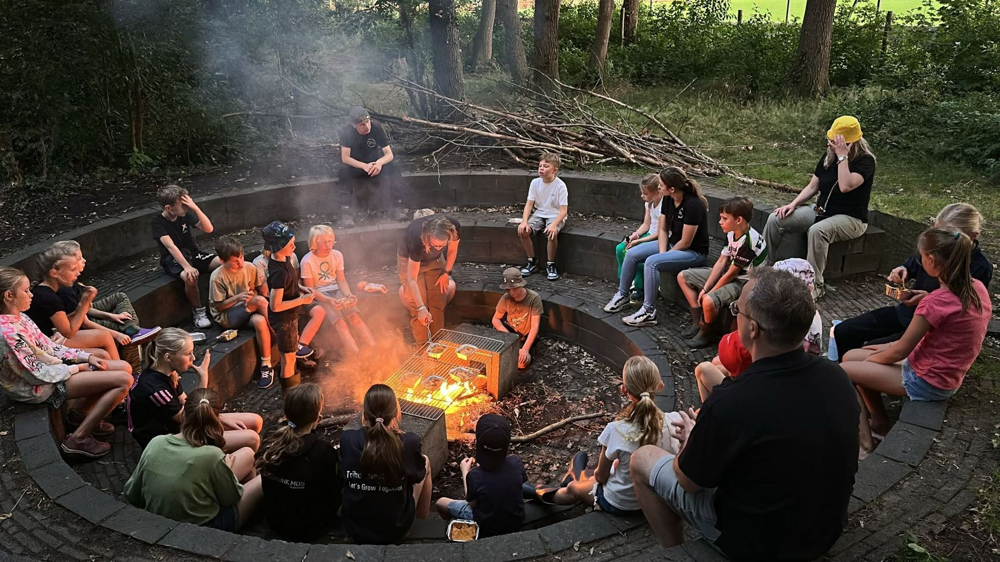
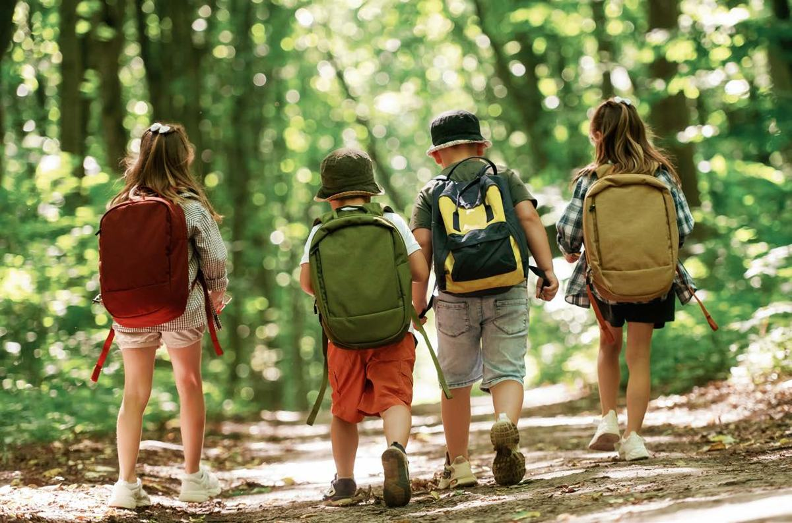
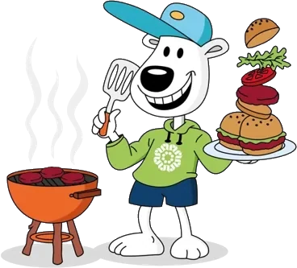
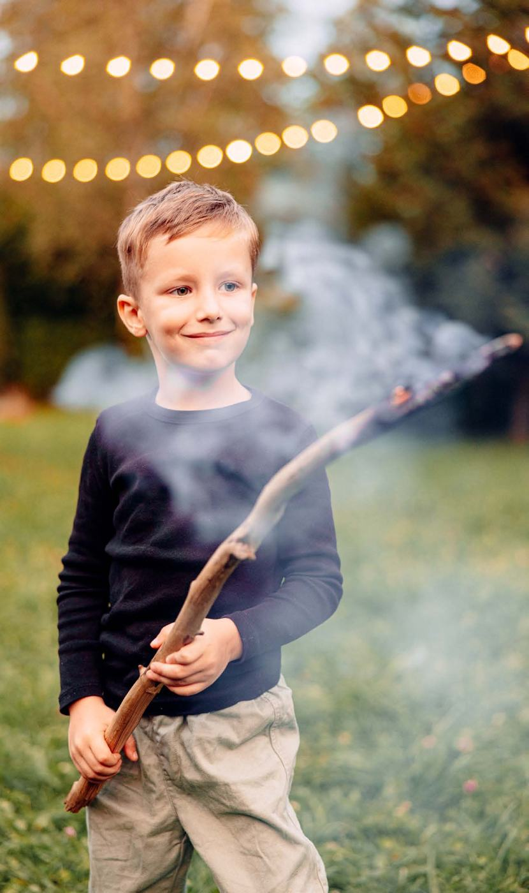
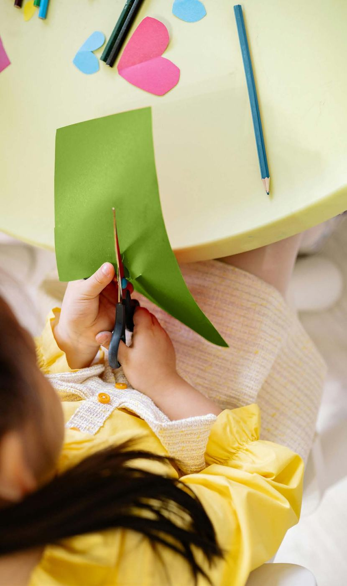
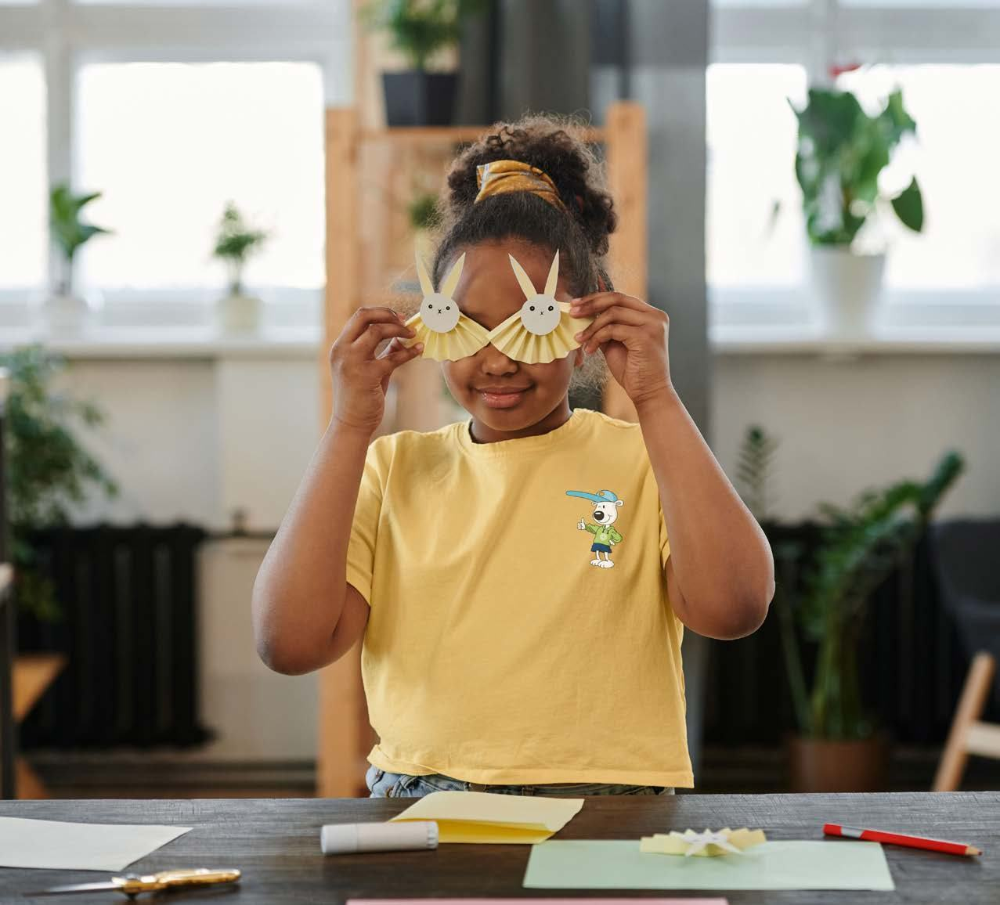
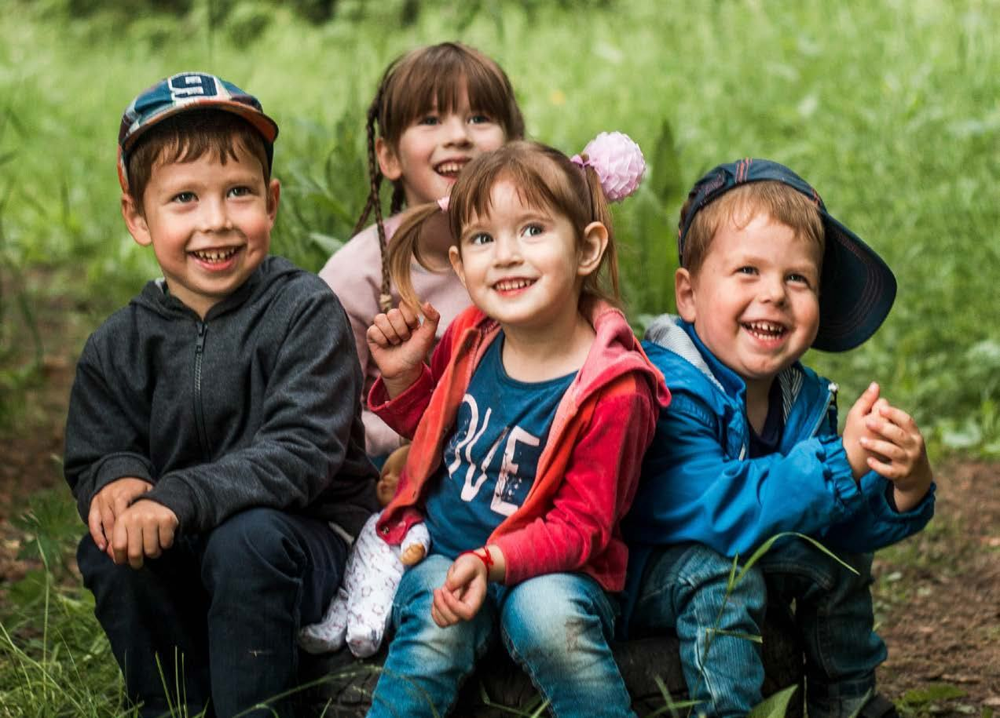
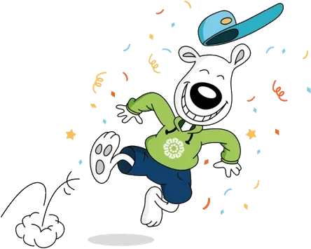

Jong NederlandAalbergen
Elke zaterdag buiten op avontuur
Bij Jong Nederland Aalbergen spelen kinderen van 4 tot 18 jaar elke week samen buiten. Hutten bouwen, speurtochten, kampvuur en elk jaar een zomerkamp. Kom gerust een keer meedoen.

Doe mee met de club
Lid worden
Je kind mag eerst drie keer gratis meedoen.
Aanmelden
Vrijwilliger worden
Een paar keer per jaar of elke week: je bepaalt zelf hoeveel tijd je geeft.
Bekijk de rollen
Ons clubgebouw huren
Voor groepen, kampen en familieweekenden. De opbrengst gaat naar de club.
Beschikbaarheid aanvragenVoor elke leeftijd een groep
Kinderen spelen met leeftijdsgenoten, onder begeleiding van vaste leiding.
- 4 t/m 6 jaar
Zaterdag 10:00 – 11:30
Minioren
Korte, fantasierijke spelletjes vol beweging.
- 7 t/m 9 jaar
Zaterdag 10:00 – 12:00
Maxioren
Actief, nieuwsgierig en graag samen op pad.
- 10 t/m 12 jaar
Zaterdag 13:30 – 15:30
Junioren
Teamspellen, creatieve projecten en ontdekken.
- 13 t/m 15 jaar
Vrijdag 19:00 – 21:00
Senioren
Gezelligheid, eigen inbreng en samen uitdagingen aangaan.
- 16 en 17 jaar
Vrijdag 20:00 – 22:30
16+ groep
Eigen activiteiten organiseren en helpen bij de jongere groepen.
Wat we doen
Naast de wekelijkse clubdag organiseren we het hele jaar door activiteiten.
Opening seizoen
Dropping
Zomerkamp 2026
18 juli 2026




Onze sponsors
Met hun steun houden we de contributie laag.
- Bakkerij Voorbeeld
- Installatiebedrijf Twente
- Dorpsvereniging Aalbergen
Kom eens kijken
Twijfel je of het iets voor je kind is? Kom een zaterdag langs en maak kennis met de leiding.
